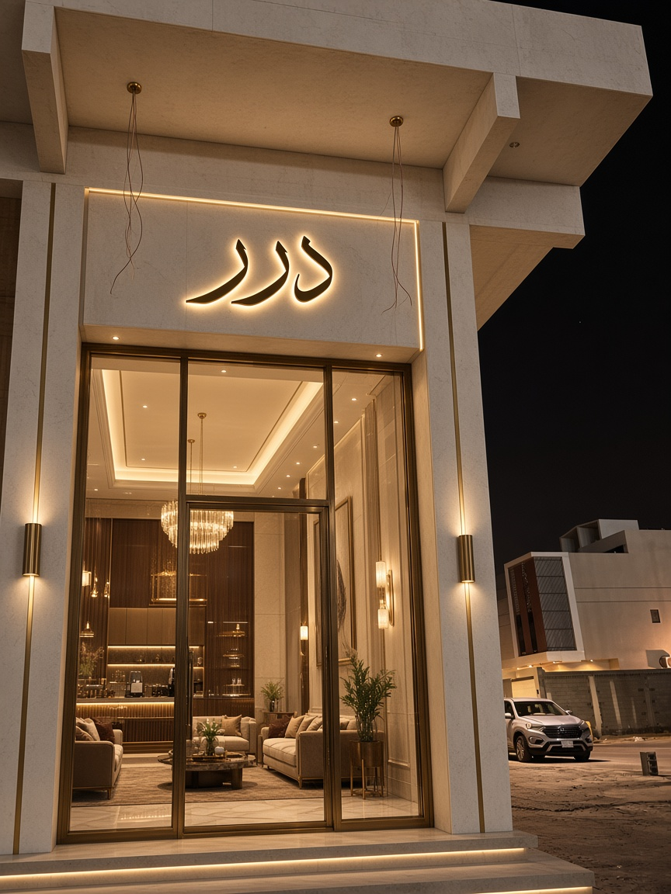
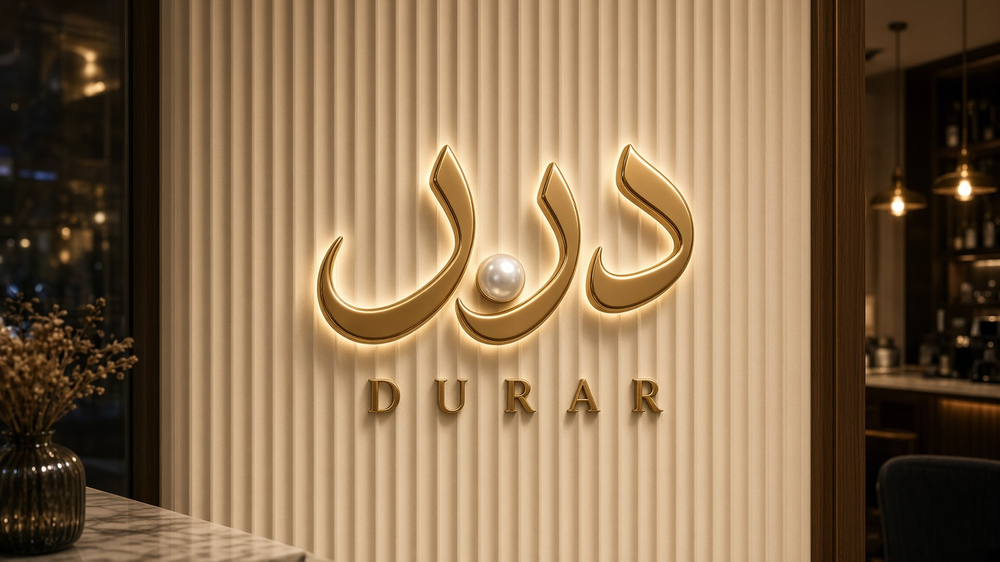
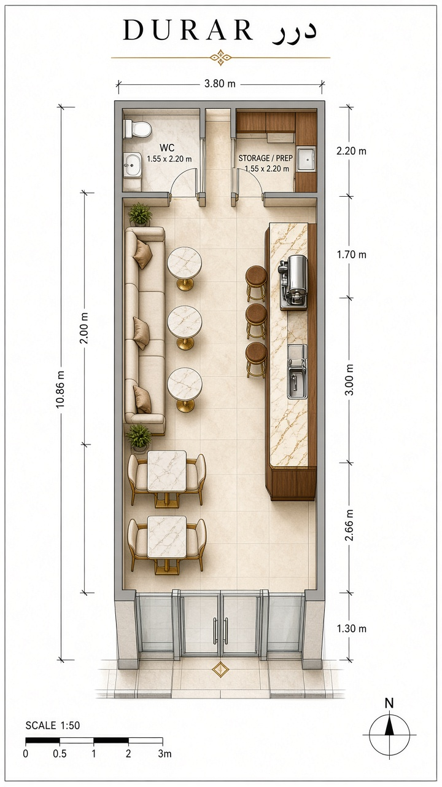
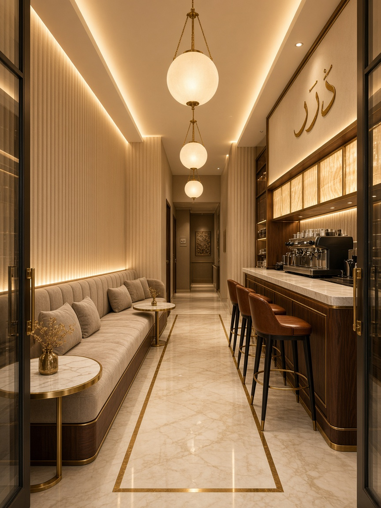
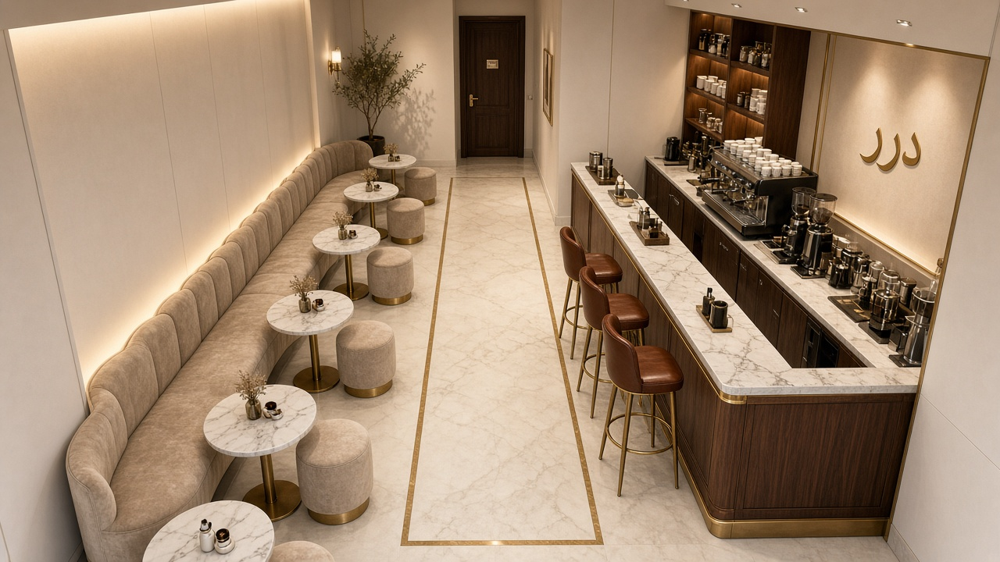
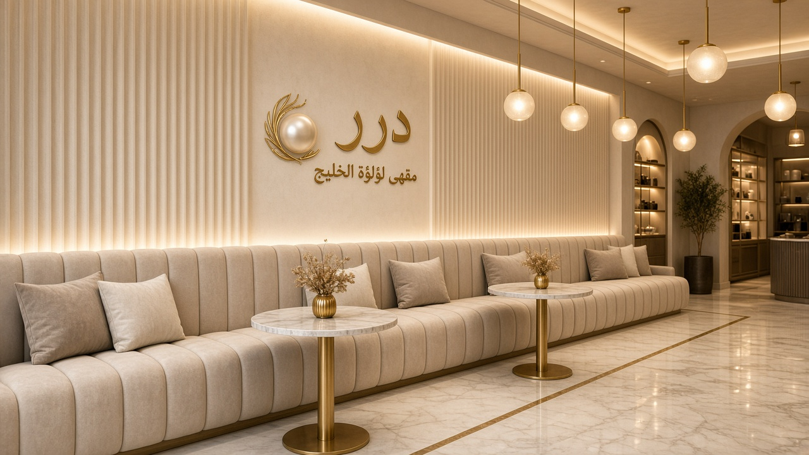
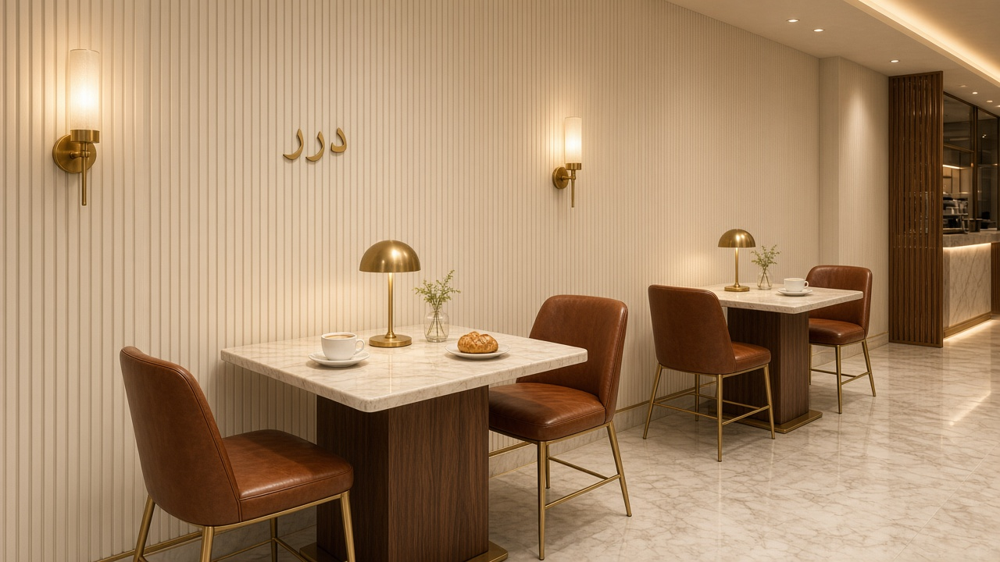
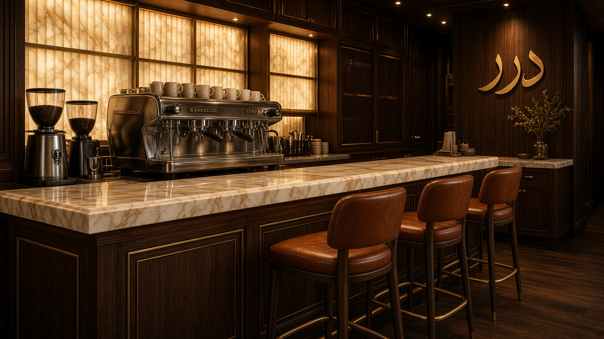
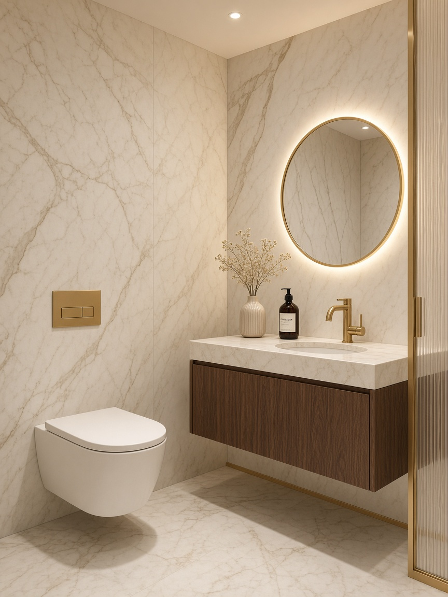

مكان الشعار
خط عربي ذهبي مع لؤلؤة في قلب الاسم. يُثبَّت بثلاث نسخ: لافتة مضيئة على كمرة الواجهة، حروف معدنية ثلاثية الأبعاد على جدار الكنب، ونسخة أصغر خلف البار.
تصميم كامل لمحل كوفي ضيق وطويل، بطابع لؤلؤي فخم: شعار بارز على الواجهة، بار خشب جوز وذهب، جلسات بكنب مخملي، طاولات رخام، وحمّام خاص في الخلف.

الاسم «درر» يعني اللآلئ، لذلك الخامة الأساسية كريمية لؤلؤية مع نحاس ذهبي دافئ وخشب جوز عميق. العرض 3.80 م يفرض توزيعًا طوليًا: البار على اليمين كعمود بصري، والجلوس على اليسار، والخدمات مخفية في آخر المحل.
خط عربي ذهبي مع لؤلؤة في قلب الاسم. يُثبَّت بثلاث نسخ: لافتة مضيئة على كمرة الواجهة، حروف معدنية ثلاثية الأبعاد على جدار الكنب، ونسخة أصغر خلف البار.

جدار مضلّع كريمي مع إضاءة خلف الحروف. هذا هو أول ما يراه الزائر بعد الباب، ويصلح للتصوير والإعلانات.
المدخل من الشارع في الأسفل. الحركة في ممر أوسط بعرض ≈ 90 سم. الطاقة الاستيعابية 13 شخصًا دون ازدحام.


أول انطباع: كنب مخملي يسارًا، بار رخام يمينًا، وإضاءة كرات زجاج دافئة على محور الحركة.

البار خط مستقيم يخدم الممر، والكنب يستغل الجدار الطويل بالكامل.

كنب مخمل قناة طولية، طاولات رخام دائرية، وجدار شعار درر.

طاولة 70×70 لشخصين، كراسي جلد كونياك، وإضاءة حائط نحاسية.

رخام كريمي، مكينة إسبريسو، إضاءة أونيكس، و3 كراسي بار.

دورة مياه واحدة فخمة في أقصى المحل: مرحاض معلق، مغسلة خشب جوز، مرآة دائرية مضيئة، وحنفية ذهبية. الباب لا يكشف داخل الحمّام من الصالة بسبب انكسار الممر.
| العنصر | المواصفة | ملاحظة |
|---|---|---|
| الأرضية | رخام كريمي 80×80 مع فواصل نحاس 8 مم | ميل خفيف نحو صرف البار |
| الجدران | جبس مضلّع + دهان لؤلؤي مطفي | شريط LED مخفي أعلى الكنب |
| السقف | جبس مستوي بارتفاع 3.00 م مع كوف إضاءة | السقف الحالي أعلى ويسمح بذلك |
| البار | خشب جوز طبيعي + سطح رخام 3 سم + نحاس | عمق السطح 65 سم، منطقة عمل 95 سم |
| الكنب | مخمل شمباني، قاعدة جوز، مواسير نحاس | عمق 65 سم، طول ≈ 4.5 م |
| الطاولات | رخام دائري Ø55 وطاولات مربعة 70×70 | قواعد نحاس |
| الواجهة | زجاج سيكوريت بإطار برونز | حروف درر مضيئة على الكمرة |
| الحمّام | كلادينج رخام، مغسلة معلقة، مرحاض معلق | تهوية شفط + باب خشب 80 سم |
| الإضاءة | 2700 كلفن: كوف + كرات زجاج + سبوت | ديمر لجميع الدوائر |
نموذج 3D بعرض 3.80 م وطول 10.86 م: يمكن تدويره أو المشي فيه بين البار والكنب والحمّام.